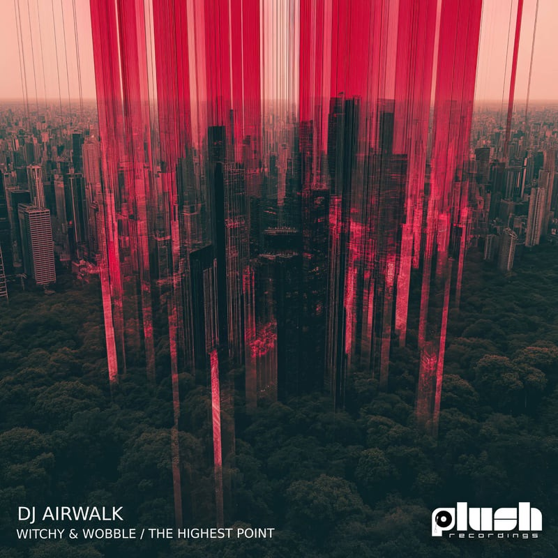

POINTS:
0

WITCHY & WOBBLE
DJ AIRWALK
PLUSH120 • 2025
GET THIS TRACK
CLICK TO START AUDIO
Browsers require user interaction before playing audio.
Click the button to begin the full audio-visual experience.
gfx @shoeboxdnb • music djairwalk
